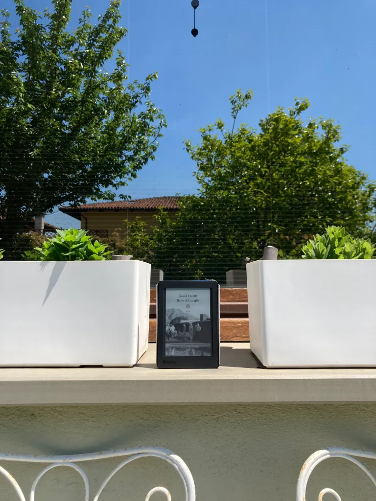

Tomorrow, and tomorrow, and tomorrow, Gabrielle Zevin, Nord, 2022
Home › Blog
Ammartaggio
Alla veneranda età di 26 anni ho approcciato per la prima volta agli audiolibri come antidoto contro la noia di camminare
per andare al lavoro. Non sono il tipo che cammina per sport né per piacere. Cammino per necessità.
Sono riuscita a scampare alle camminate in mezzo ai campi - luoghi dai quali sono nata e cresciuta
- non so neanche io come, ma da quando vivo a Torino camminare mi è subito parsa l’unica soluzione possibile.
Strana ironia della sorte: la città dovrebbe essere il luogo meno salutare e meno sensato
per camminare, eppure chi abita a Torino potrebbe dire l’esatto contrario.
Non che non ci siano automobili o mezzi di trasporto, anzi, è proprio perché ce ne sono un’infinità che il torinese presto
capisce che muoversi a piedi richiede la stessa quantità di tempo che richiede muoversi con due o quattro ruote.
Dunque, se sei povero e grasso, perché non farlo.
Tornando agli audiolibri, ho quindi trovato il modo per rendermi meno noiosa possibile questa attività così distante dalle
mie volontà, e l’ho trovato facendomi l’abbonamento prima a Storytel poi ad Audible.
Dopo varie belle avventure, come "Mi dica tutto"
e “Génie la matta”,
ho deciso di provare ad ascoltare "Tomorrow, and Tomorrow,
and Tomorrow" , romanzo del 2022 scritto da Gabrielle Zevin, tradotto in italiano da Elisa Banfi per Editrice Nord e letto da Riccardo
Bocci, un lettore proprio giusto - qui altri audiolibri letti da lui -.
Siamo a metà anni 90 quando due giovani si rincontrano in metro dopo aver vissuto una parte decisamente importante della loro
infanzia a giocare insieme. Sono Sam e Sadie, due ragazzi di Boston giunti in California per continuare gli studi e trasformare
la loro passione in lavoro, una alla MIT e uno ad Harvard.
Passati otto anni dalla prima lite che li aveva divisi, il rincontrarsi per caso pare ad entrambi una occasione da cogliere al volo.
È a questo punto che iniziamo a seguirli nelle loro varie avventure, vere e simulate, in mondi reali e in mondi virtuali.
Nonostante lo strillo “questa non è una storia d’amore, ma parla d’amore” che potrebbe apparire melenso, la frase rispecchia a pieno l’identià del libro.
Ma per rasserenare i poco romantici, si potrebbe anche dire che questa non è una storia di videogiochi, ma parla di videogiochi.
O ancora che questa non è una storia di vita vera, ma parla di vita vera.
Tomorrow and Tomorrow and Tomorrow non è un libro bellissimo solo per gli appassionati della materia, ma devo ammettere che, essendomi da poco avvicinata a questo mondo - quello del design, dei videogiochi no mai -, se ti interessa il tema, il libro diventa ancora più divertente e
l’immedesimazione maggiore, come quando Sadie finisce di progettare e si rende conto all’improvviso di non essersi lavata per mesi.
In realtà il mio snobismo verso questa modalità di intrattenimento contiene una certa invidia, ma soprattutto una grande finzione. Sto insieme al mio nerd da 8 anni, di cui 5 li ha occupati utilizzando la PlayStation almeno un’ora al giorno, gli altri 3 ad aspettare di uscire dal lavoro per continuare ad utilizzarla.
Adoro i nerd e li capisco, seppure di nuovo so come questa frase possa risultare doppiamente snob e fuoriluogo.
Ecco in questo libro, i protagonisti non devono aspettare di uscire dal lavoro per giocare ai videogiochi, perché giocare ai videogiochi - da loro progettati - è il loro lavoro.
Presto però si capisce che i videogiochi svolgono un ruolo ben diverso dall’essere il fulcro del libro, sono invece la buccia, il contenitore, la copertina, le mura di ciò che si cela dietro questo mondo ludico, che rende il giocarci così eccitante e gli appassionati così convinti: la possibilità di provarci e riprovarci e riprovarci ancora.
Se perdi non è per sempre perché nulla è mai per sempre. Nei giochi.
Ai più pigri questa potrebbe sembrare una delle peggiori imprese da intraprendere nella propria vita, ma se si soffermassero a riflettere sul vero significato che si cela dietro l’accostamento di queste due parole “provarci e riprovarci”, sono certa che anche loro si renderebbero conto della rarità e della portata di questa possibilità.
Quant’è complicato - parlo della vita vera - poter provare e riprovare qualcosa. Quante volte al giorno ci può capitare di usare una seconda, una terza, una quarta possibilità? Di prenderci una rivincita. Di ricominciare.
Io me lo chiedo prima di ogni scelta e dopo ogni sconfitta.
Basti pensare alla scuola, quando ci ritrovavamo di fronte al solito 3 o 4 o 5 1/2 della verifica che avevamo potuto fare una sola volta, appunto.
Oppure penso alle prime uscite con ragazzi, ragazze, amici, amiche, al momento del saluto quando ripercorrevamo nelle nostre menti le conversazioni avute e ci mordevamo la lingua per quante cazzate avevamo detto, o non detto.
Alla fine di una relazione, quando devi ricominciare sì, ma da solo.
Ma anche banalmente quando ordiniamo qualcosa al ristorante e saremmo disposti a fare di tutto - di tutto - per tornare indietro e fare scelte diverse.
In quasi la metà delle occasioni della mia vita mi è capitato di pensare che no, non avrei voluto quello che avevo scelto o quello che mi era capitato. Poi, per fortuna, la mia cieca e stupida positività mi fa ripetere che sì, forse va bene anche così, e poi chi lo sa se l’altra sarebbe stata la scelta migliore.
Ecco che però questo “chi lo sa” comunque rimane in gola, così come rimane quel senso di sconfitta, di perdita, di rammarico, di delusione, di stanchezza che deriva dall’impossibilità, nella nostra vita da poveri e comuni mortali, di “provarci e riprovarci” ancora.
Provarci e riprovarci vuol dire imparare la strada, la scorciatoia, l’escamotage migliore per continuare a camminare e a sopravvivere.
Vuol dire imparare a non perdere.
Ma vuol dire anche - e con questo romanzo lo si capisce meglio - impedire determinate perdite, che possono riguardare il pullman quando si è in ritardo, l’appuntamento di lavoro quando ce ne si dimentica, le occasioni della vita quando si sta a casa, ma soprattutto la perdita delle persone amate.
Come ci insegna la Fagnani, che furbescamente lascia per ultima questa domanda: “Se potesse riportare in vita una persona che non c'è più per due minuti, chi sarebbe e cosa gli o le direbbe?”, chiunque ha perso qualcuno. Che tu sia o meno pronto, e che lo sia o meno l’altra/o, poco importa: non si è mai pronti a perdere. E non lo si è, semplicemente perché non si impara a perdere, specie le persone.
Aveva letto in un libro sulla coscienza che negli anni il cervello umano crea una versione virtuale delle persone amate, raccoglie dati e al suo interno ospita queste versioni. Quando una persona muore, il cervello pensa ancora che la sua versione virtuale esista, perché in un certo senso è così. A poco a poco però il ricordo sbiadisce e di anno in anno ci si trova con una versione sempre più impoverita…
Non sono una sportiva né un guru , dunque non sono una fan “dell’imparare a perdere”. Basta con la cazzata che cadendo si impara. Cadendo ci si fa male, ci si sbuccia le ginocchia se non proprio le si perde, non si impara un bel niente. Il massimo che ti può capitare, dopo una caduta, è prevedere la prossima buca e sperare di non finirci di nuovo dentro.
Non si è mai pronti a perdere, ma soprattutto nessuno vuole imparare a perdere.
Voglio dire, alla domanda “preferiresti imparare cadendo o continuare a correre senza imparare un bel niente?” forse sta parlando la mia me bionda, ma io risponderei: “Avanti tutta!”.
Oltre a tutte queste perdite, si parla di molto altro. Ci sono universi paralleli, mondi fantastici, stilografiche che diventano armi, monologhi shakespeariani, gente che si schiera contro Ettore e gente che parteggia per Achille, cavalli di nome Pixel, Ann Lee che si buttano dai balconi e uccelli che imparano a non avvicinarsi troppo alle fragole, protesi e dolori, ma anche donne incinte che galoppano e i primi gay che iniziarono a sposarsi in America, giovani gamer e giovani assassini, borghesia e povertà, manager e creativi, registi e pizzaioli, violini suonati da ragazze nude e cani che non sono coyote.
C’è veramente di tutto, tanto che anche a te, che non hai mai preso in mano un joystick, viene una voglia matta di iniziare a farlo e non smettere mai.
Continua a leggere

Klara e il sole, Kazuo Ishiguro, Einaudi, 2021
16 Giugno 2022
Ho letto giusto due giorni fa la conversazione tra un ingegnere di Google,
Blake Lemoine, e la sua LaMDA, un’intelligenza artificiale utilizzata per generare chatbot che interagiscono con gli utenti.
Qui trovate la reale conversazione avvenuta tra l’ingegnere e l’IA che ha tutto a che vedere con una qualsiasi interazione che...
Leggi l’articolo

Monsieur Solitaire, 4321, Paul Auster, Einaudi, 2017
1 Settembre 2024
Cosa sarebbe stato della nostra vita se invece di quella scelta ne avessimo fatta un'altra?
Che persone saremmo oggi se quel giorno non avessimo perso il treno, se avessimo risposto al saluto di quella ragazza,
se ci fossimo iscritti a quell'altra scuola, se... Ogni vita nasconde, e protegge, dentro di sé tutte le altre che non si sono realizzate,
che sono rimaste solo potenziali...
Leggi l’articolo

Due chicche per gli amanti dei libri sui libri
1 Settembre 2024
Due libri per chi è "del mestiere", ossia due libri che potrebbero piacere maggiormente
ai rari esemplari che hanno deciso di fare il dottorato o, ancor peggio, di entrare nel mondo dell'editoria.
Leggi l’articolo

La simmetria dei desideri, E. Nevo, Neri Pozza, 2010
21 Luglio 2022
Accanto ad uno dei miei scrittori preferiti, David Grossman - leggetelo - , c'è ormai da
parecchi anni un altro dei massimi scrittori israeliani viventi: Eshkol Nevo.
Mi sono, però, avvicinata da poco a quest'ultimo, tramite:
Leggi l’articolo
L'opposto di me stessa, M. Mason, H. Collins, 2022
5 Maggio 2022
Perchè quando la sofferenza è inevitabile, l’unica cosa che si può scegliere è lo scenario. Martha ha quarant’anni e
una vita apparentemente perfetta, un uomo che la venera dall’infanzia e una famiglia stramba ma piena d’amore. Eppure è infelice.
Leggi l’articolo

Ballo di famiglia, David Leavitt, SEM, 2021
17 Maggio 2021
Non voglio dire che le famiglie italiane siano migliori – se ancora ne esistono -,
ma dopo aver letto anche solo uno di questi racconti converrete con me che forse forse ci è andata ancora bene.
Leggi l’articolo